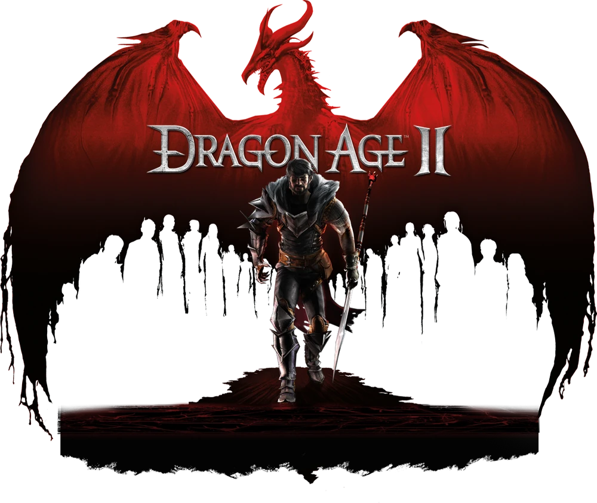
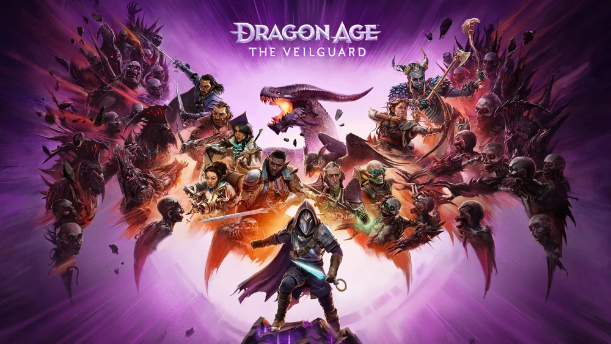

Dragon Age Origins

Primer juego de la saga, donde controlas al guarda gris y tienes que detener la misteriosa Ruina.
Dragon Age 2

Segundo juego de la saga, aquí controlas a Hawke mientras intenta adaptarse a vivir en Kirkwall tras que se le forzara de Ferelden durante la Ruina
Dragon Age Inquisition

Tercer juego de la saga, se controla a un personaje misterioso que tiene la capacidad de cerrar las grietas en el Velo que amenazan el mundo de Thedas.
Dragon Age Veilguard

Cuarto juego de la saga, controlas a Rook y tienes que detener los planes para llevar a Thedas al caos de un antiguo aliado del prota del juego anterior.